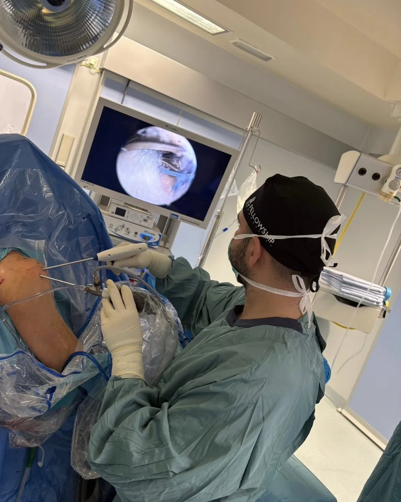
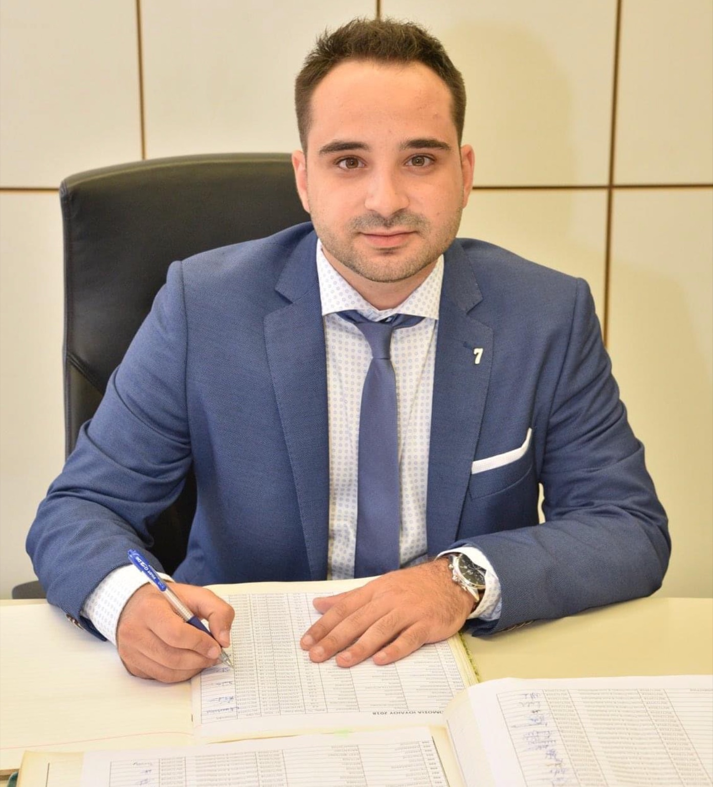

Ορθοπαιδικός Χειρουργός · Θεσσαλονίκη
Κίνηση
με Σιγουριά.
Στο dporthopedics, η διεθνής εξειδίκευση στη χειρουργική ώμου και η σύγχρονη ορθοπαιδική προσέγγιση συναντούν την εξατομικευμένη φροντίδα.


Orthopaedics & Traumatology
Ο Γιατρός
Αθανάσιος Πατούσης
Ορθοπαιδικός Χειρουργός
Ο Αθανάσιος Πατούσης είναι Ορθοπαιδικός Χειρουργός με σύγχρονη εκπαίδευση και διεθνή εμπειρία σε όλο το φάσμα της Ορθοπαιδικής και Τραυματολογίας.
Διαθέτει εξειδίκευση στη χειρουργική ώμου, fellowship στην αρθροσκοπική χειρουργική ώμου στη Βαρκελώνη και πανευρωπαϊκό τίτλο FEBOT.
Το πλήρες βιογραφικό →Υπηρεσίες
Ολοκληρωμένη ορθοπαιδική φροντίδα,
με διεθνή εξειδίκευση
Αρθροσκόπηση Ώμου
Ελάχιστα επεμβατική αντιμετώπιση παθήσεων του ώμου με σύγχρονες αρθροσκοπικές τεχνικές.
Μάθετε περισσότερα → 02Ρήξη Μηνίσκου
Αξιολόγηση ρήξεων μηνίσκου και επιλογή της κατάλληλης θεραπείας για ασφαλή επιστροφή στη δραστηριότητα.
Μάθετε περισσότερα → 03Ρήξη Πρόσθιου Χιαστού Συνδέσμου
Σύγχρονη αντιμετώπιση της ρήξης ΠΧΣ με στόχο σταθερότητα, προστασία του γόνατος και ασφαλή επάνοδο.
Μάθετε περισσότερα → 04Χόνδρινες Βλάβες
Εξατομικευμένη αντιμετώπιση βλαβών του αρθρικού χόνδρου για μείωση πόνου και βελτίωση λειτουργικότητας.
Μάθετε περισσότερα → 05Οστεοαρθρίτιδα Γόνατος & Ισχίου
Ολιστική αντιμετώπιση της οστεοαρθρίτιδας για ανακούφιση από τον πόνο και βελτίωση της καθημερινής κινητικότητας.
Μάθετε περισσότερα → 06Κατάγματα & Τραυματολογία
Άμεση και οργανωμένη αντιμετώπιση καταγμάτων με στόχο σωστή πώρωση και ασφαλή επιστροφή στη λειτουργικότητα.
Μάθετε περισσότερα → 07Ρήξη Τένοντα
Σύγχρονη αντιμετώπιση τενοντικών κακώσεων για επαναφορά δύναμης, κίνησης και λειτουργικότητας.
Μάθετε περισσότερα → 08Βιολογικές Θεραπείες
Ελάχιστα επεμβατικές θεραπείες που αξιοποιούν φυσικούς μηχανισμούς επούλωσης, σε επιλεγμένες ορθοπαιδικές παθήσεις.
Μάθετε περισσότερα →Η Φιλοσοφία μας
Με επίκεντρο τον άνθρωπο, στόχος είναι η γρήγορη, ασφαλής και λειτουργική αποκατάσταση μέσα από λεπτομερή κλινική αξιολόγηση και εξατομικευμένη θεραπευτική προσέγγιση.Αθανάσιος Πατούσης · Ορθοπαιδικός Χειρουργός
Επικοινωνία
Κλείστε το ραντεβού σας
Η λειτουργία του ιατρείου είναι κατόπιν ραντεβού. Επικοινωνήστε μαζί μας για να κανονίσουμε μαζί την επίσκεψή σας.
- ΩράριοΚαθημερινά και Σαββατοκύριακο, 09:00 – 22:00
κατόπιν ραντεβού - ΔιεύθυνσηΑπόστολου Κουγιάμη & Μιχαήλ Ψελλού, Επέκταση Θέρμης
Θεσσαλονίκη - Τηλέφωνο698 566 5638
- Emaildporthopedics@gmail.com
Κριτικές στο Google
Η εμπειρία των ασθενών μας
-
Είχα την τύχη να εμπιστευτώ τον συγκεκριμένο ορθοπεδικό χειρουργό για την επέμβαση στον ώμο μου.η οποία πραγματοποιήθηκε στην κλινική Άγιος Λουκάς στη Θεσσαλονίκη. Πρόκειται για έναν εξαίρετο επιστήμονα,έναν νέο και καταρτισμένο γιατρό,αλλά πάνω απ'όλα έναν υπέροχο άνθρωποπο.Απότην πρώτη στιγμή με έκανε να αισθανθώ ασφάλεια και εμπιστοσύνη, με την άριστη επιστημονική του κατάρτιση,την ευγένεια, την υπομονή και το πραγματικό του ενδιαφέρον. Η επέμβαση πήγε εξαιρετικά. Η αποκατάσταση μου εξελίσσεται πάρα πολύ καλά.Τον ευχαριστώ θερμά και τον συστήνω ανεπιφύλακτα!
-
Εξαίρετος επιστήμονας, με ήθος και ειλικρινες ενδιαφέρον για τον ασθενή και την εξέλιξη της υγείας του.
-
Εξαιρετικός επαγγελματίας και παρά πολύ καλό παιδί τόν ευχαριστώ και δημοσίως διότι αντιμετωπιζαμε προβλήματα εγώ και ο γιος μου από τις δουλειές στα χωράφια πρωσοπικα αντιμετώπιζα ένα τεράστιο πρόβλημα με το δεξί μου χέρι και χάριν στο Θανάση γλυτώσαμε το χειρουργείο μόνο με την θεραπεία που μας χορήγησε ο γιατρός μας ο Θανάσης και έτσι καταφέρνω να είμαι ενεργός στα χωράφια και να μαζεύω τις πιπεριές μου.
-
Καταπληκτικός γιατρός και φοβερός άνθρωπος, με βοήθησε πολύ με τον χρόνιο πόνο στις ωμοπλάτες. τον συστήνω ανεπιφύλακτα.
-
Καταπληκτικός γιατρός να σε βοηθήσει να σε εξυπηρετήσει, είναι εκεί να σου λύσει όλες τις απορίες πάνω από όλα άνθρωπος. Μπράβο σας!
-
Εξαιρετικός επιστήμονας και άνθρωπος. Ο Dr.Αθανάσιος Πατούσης είναι πλήρως καταρτισμένος, επεξηγηματικός και δείχνει πραγματικό ενδιαφέρον για τον ασθενή. Μου εξήγησε με λεπτομέρεια το πρόβλημα και τις θεραπευτικές επιλογές, εμπνέοντας από την πρώτη στιγμή σιγουριά και εμπιστοσύνη. Το ιατρείο του είναι σύγχρονο και η εξυπηρέτηση άψογη. Τον συστήνω ανεπιφύλακτα!
-
Επισκέφθηκα τον γιατρό λόγω ενός έντονου προβλήματος στον αυχένα, το οποίο με ταλαιπωρούσε για αρκετό καιρό και είχε αρχίσει να επηρεάζει σημαντικά την καθημερινότητά μου. Από την πρώτη στιγμή ένιωσα ότι ασχολήθηκε πραγματικά με την περίπτωσή μου και μου εξήγησε με απλά και κατανοητά λόγια τι ακριβώς συνέβαινε και ποιες ήταν οι επιλογές μου.
Αρχικά ακολουθήσαμε συντηρητική θεραπεία, όμως όταν διαπιστώθηκε ότι το πρόβλημα δεν υποχωρούσε όπως θα θέλαμε, συζητήσαμε αναλυτικά το ενδεχόμενο της επέμβασης. Ο γιατρός ήταν ξεκάθαρος σε κάθε στάδιο και μου ενέπνευσε εμπιστοσύνη, χωρίς να με πιέσει να πάρω κάποια απόφαση.
Η επέμβαση πήγε πολύ καλά και η μετεγχειρητική πορεία ήταν πολύ ομαλή. Αυτό που εκτίμησα ακόμη περισσότερο ήταν ο επαγγελματισμός, η ανθρώπινη προσέγγιση και το γεγονός ότι ήταν πάντα διαθέσιμος να μου εξηγήσει οτιδήποτε με απασχολούσε. Από την πρώτη επίσκεψη μέχρι και την ανάρρωση ένιωθα ότι ήμουν σε καλά χέρια. Τον ευχαριστώ θερμά και τον συστήνω ανεπιφύλακτα σε όποιον αντιμετωπίζει αντίστοιχο πρόβλημα.
-
Καταπληκτικός επαγγελματίας και προσηλωμένος στη δουλειά του. Τον επισκέφθηκα έχοτνας υποστεί ρήξη έξω μηνίσκου. Ο γιατρός έκανε παρατεταμένη κλινική εξέταση, με σειρά ειδικών κινητικών δοκιμασιών για ασφαλή διάγνωση ενώ παράλληλα μου εξηγούσε με λεπτομέρεια τα πάντα. Κάναμε μαζί το χειρουργείο και πραγματικά ήταν μαζί μου μέχρι την πλήρη ανάρρωση, αποθεραπεία και ενδυνάμωση. Πλεόν το πόδι μου είναι ίσως δυνατότερο και πιο σταθερό από το δεξί ! Σ ευχαριστώ Dr.!!! Συστήνεται ανεπιφύλακτα
-
Εξαιρετικός άνθρωπος και επιστήμονας.
-
Έμεινα απόλυτα ικανοποιημένη από την επίσκεψή μου. Ο γιατρός έδειξε πραγματικό ενδιαφέρον για το πρόβλημά μου, ήταν αναλυτικός και κατατοπιστικός και μου ενέπνευσε μεγάλη ασφάλεια. Εξαιρετικός επαγγελματίας και πάνω απ’ όλα άνθρωπος. Τον ευχαριστώ θερμά και τον προτείνω ανεπιφύλακτα!
-
Εξαιρετικός γιατρός και πραγματικά άψογος επαγγελματίας. Με αντιμετώπισε με μεγάλη προσοχή και υπευθυνότητα μετά το διπλό κάταγμα στο πόδι μου, εξηγώντας μου με κατανοητό τρόπο κάθε στάδιο της θεραπείας. Έδειξε ενδιαφέρον, υπομονή και ανθρωπιά σε όλη τη διάρκεια της αποκατάστασης. Τον συστήνω ανεπιφύλακτα!
-
Πρόσφατα χειρουργήθηκα από τον κ. Πατούση. Η επιστημονική του κατάρτιση με εξέπληξε. Ήταν πρόθυμος να λύσει κάθε απορία μου. Είναι ένας νέος γιατρός με πολλές γνώσεις και προσεγγίζει ανθρώπινα τον ασθενή.
-
Ευχαριστώ πολύ τον εξαιρετικό επιστήμονα και άνθρωπο, Αθανάσιο Πατουση, που με τη σωστή διάγνωση και κατάλληλη θεραπευτική αγωγή, έδωσε λύση στο πρόβλημα που αντιμετώπιζαν με τα άνω άκρα.
-
Άριστη επαγγελματική συμπεριφορά, λεπτομερής εξέταση και σαφής ενημέρωση. Ένιωσα ασφάλεια και εμπιστοσύνη από την πρώτη επίσκεψη. Εξαιρετικός γιατρός!!!
-
Αξιόλογος επιστήμονας και υπέροχος άνθρωπος. Άρτια καταρτισμένος και ευγενικός!
-
Με ταλαιπωρούσε πόνος στον ώμο, ιδιαίτερα τη νύχτα. Ο γιατρός εντόπισε το πρόβλημα και μου έδωσε σαφείς οδηγίες για τη θεραπεία και την αποκατάσταση. Ήταν ευγενικός, κατανοητός και πραγματικά ενδιαφέρθηκε για την πορεία μου.
Συνιστώ ανεπιφύλακτα.
-
Επισκέφθηκα τον γιατρό για πρόβλημα στον μηνίσκο. Από την πρώτη συνάντηση μου ενέπνευσε εμπιστοσύνη, επειδή ήταν αναλυτικός και ειλικρινής. Μου εξήγησε τι έδειχναν οι εξετάσεις, ποιες λύσεις υπήρχαν και τι να περιμένω από την αποκατάσταση. Πολύ καλή αντιμετώπιση και ουσιαστικό ενδιαφέρον.
-
Γνώρισα τον κύριο Πατούση όταν επισκέφτηκα εκτακτώς το νοσοκομείο που έκανε την ειδικότητα του. Ήταν από την πρώτη στιγμή δίπλα μου με ενδιαφέρον, ενσυναίσθηση και αυτοπεποίθηση που με έκαναν να τον εμπιστευτώ ανεπιφύλακτα.
Τον επισκεφτήκαμε πρόσφατα οικογενειακώς και στο ιδιωτικό του ιατρείο όπου αποκομίσαμε και εκεί τις καλύτερες εντυπώσεις!
Ένας νέος ιατρός με επιστημονική κατάρτιση και ανθρώπινη προσέγγιση!Ευγε!
-
Εξαιρετικός επιστήμονας και ανθρώπος.ο δεκαπεντάχρονος γιος μου υποβλήθηκε σε εγχείρηση ρήξη χιαστού με απόλυτη επιτυχία.το σημαντικότερο ήταν η συνεχής παρουσία του γιατρού σε όλη τη διάρκεια της αποθεραπείας του.
-
Εξαιρετικός ορθοπεδικός χειρουργός και ένας υπέροχος άνθρωπος. Με ήθος, ευγένεια και πραγματικό ενδιαφέρον για τον άνθρωπο. Τον εκτιμούμε ιδιαίτερα και τον εμπιστευόμαστε απόλυτα. Τον συστήνουμε ανεπιφύλακτα!
-
Εξαιρετικός γιατρός με γνώση στο αντικείμενο.
-
Εξαιρετικός γιατρός, με πραγματικά υψηλό επίπεδο γνώσεων και πολύ μεγάλη εμπειρία στο αντικείμενό του. Αυτό που ξεχωρίζει ιδιαίτερα είναι η ικανότητά του να αξιολογεί με ακρίβεια κάθε περιστατικό. Έμεινα ιδιαίτερα ικανοποιημένη και θεωρώ ότι πρόκειται για έναν άρτια καταρτισμένο και ιδιαίτερα ικανό ορθοπαιδικό, τον οποίο θα εμπιστευόμουν ξανά χωρίς δεύτερη σκέψη.
-
Εξαιρετικός γιατρός με υψηλό επίπεδο επιστημονικής κατάρτισης. Ξεχωρίζει για την εμπειρία και την εξαιρετική του ικανότητα να διαχειρίζεται ακόμη και απαιτητικά περιστατικά με ακρίβεια και αποτελεσματικότητα. Τον συστήνω ανεπιφύλακτα.
-
Εξαιρετικός επιστήμονας και πάνω απ' όλα άνθρωπος.Η εμπειρία μου από την επίσκεψη στο ιατρείο ήταν άριστη. Συστήνεται χωρίς δεύτερη σκέψη.
-
Εξαιρετικός γιατρός και πολύ καλός άνθρωπος! Πολύ άμεσος, ευγενικός και κατατοπιστικός. Τον συστήνω ανεπιφύλακτα!
-
Εξαιρετικός επιστήμονας!!!
-
Άψογη επαγγελματική και παράλληλα ανθρώπινη αντιμετώπιση της κατάστασής μας! Άριστη κατάρτιση! Αξιόλογος γιατρός, με βαθιά γνώση του αντικειμένου του και ταυτόχρονα ήρεμος και καθησυχαστικός. Τον ευχαριστούμε θερμά!
-
Πολύ καλός γιατρός, τέλειος στην δουλειά του!
-
Εξαιρετικός γιατρός!!
-
Πολύ ευγενικός και άριστος ιατρός!
-
Εξαιρετικός ιατρός.Με άριστη εξειδίκευση και γνώση πάνω στο αντικείμενο του.Τον συστήνω ανεπιφύλακτα!
-
Πάρα πολύ καλός χειρουργός ορθοπαιδικός ,έκανα επέμβαση και πήγαν όλα τέλεια και γρήγορη αποθεραπεία ...
-
Άριστος ορθοπαιδικός. Υπομονετικός και ευγενέστατος!
-
Εξαιρετικός γιατρός και άνθρωπος!!!
-
Εξαιρετικός γιατρός, καταρτισμένος και με ουσιαστικό ενδιαφέρον για τον ασθενή. Μου ενέπνευσε εμπιστοσύνη και ασφάλεια από την πρώτη στιγμή. Τον συστήνω ανεπιφύλακτα.
-
Εξαιρετικός στην δουλειά του!!!
-
Εξαιρετικός ορθοπαιδικός, με άριστη επιστημονική κατάρτιση και ανθρώπινη προσέγγιση. Ευγενικός, προσεκτικός και αναλυτικός. Τον συστήνω ανεπιφύλακτα!
-
Εξαιρετικός γιατρός και καλός άνθρωπος
-
Εξαιρετικός γιατρός με πολύ καλή γνώση του αντικειμένου του.
-
Ένας πραγματικά εξαιρετικός ορθοπεδικός και πάνω απ’ όλα ένας εξαιρετικός άνθρωπος. Από την πρώτη επίσκεψη ένιωσα ότι βρίσκομαι στα σωστά χέρια. Είναι ιδιαίτερα καταρτισμένος, σχολαστικός και πολύ προσεκτικός στην αξιολόγηση κάθε περιστατικού. Αφιερώνει τον απαραίτητο χρόνο, ακούει με προσοχή τον ασθενή και εξηγεί με απλό και κατανοητό τρόπο τόσο το πρόβλημα όσο και τις διαθέσιμες επιλογές αντιμετώπισης.
Αυτό που ξεχωρίζω περισσότερο είναι η ανθρώπινη προσέγγισή του. Είναι ευγενικός, ήρεμος και δείχνει πραγματικό ενδιαφέρον, δημιουργώντας ένα αίσθημα ασφάλειας και εμπιστοσύνης. Δεν αντιμετωπίζει τον ασθενή απλώς ως ένα περιστατικό, αλλά ως άνθρωπο.
Η συνέπεια, ο επαγγελματισμός, η επιστημονική του κατάρτιση και η ειλικρινής του διάθεση να βοηθήσει, τον κάνουν να ξεχωρίζει. Είμαι πραγματικά πολύ ικανοποιημένη από την εμπειρία μου και θα τον επέλεγα ξανά χωρίς δεύτερη σκέψη.
Τον συστήνω ανεπιφύλακτα σε όποιον αναζητά έναν εξαιρετικό ορθοπεδικό, που συνδυάζει άριστη επιστημονική γνώση με ανθρωπιά, συνέπεια και σεβασμό προς τον ασθενή!
-
Επιστημονικά άρτιος, αναλυτικός και ανθρώπινος. Μου ενέπνευσε εμπιστοσύνη από την πρώτη στιγμή.
-
Πολύ προσεκτικός, επεξηγηματικός και κατανοητός σχετικά με τη διάγνωση και τις επιλογές θεραπείας που προσφέρει. Προτείνω τον Δρ. Πατούση ανεπιφύλακτα!
-
Χρειάστηκε να υποβληθώ σε επέμβαση στο γόνατο και είχα μεγάλη αγωνία. Ο γιατρός μου εξήγησε αναλυτικά τη διαδικασία, απάντησε με υπομονή σε όλες τις ερωτήσεις μου και ήταν δίπλα μου σε όλη την πορεία της αποκατάστασης.
-
Άριστος γιατρός, πολύ ευγενικός και προσεκτικός. Εμπνέει εμπιστοσύνη και δείχνει πραγματικό ενδιαφέρον.
-
Εξαίρετος επιστήμονας και πολύ καλός άνθρωπος!
-
Ο γιατρός, προσεγγίζει το κάθε ορθοπαιδικό πρόβλημα, όχι μόνον επιστημονικά ,αλλά και με βαθιά ενσυναίσθηση ,κάτι που λείπει από την πλειονότητα των επαγγελματιών υγείας.
-
Επισκέφθηκα πρόσφατα τον Ιατρό για ένα πρόβλημα που είχα με το ισχίο μου και μπορώ να πω ότι έμεινα απόλυτα ικανοποιημένη. Πέραν της επιστημονικής του κατάρτισης και γνώσης, κάτι που μου έκανε ιδιαίτερη εντύπωση ήταν ο τρόπος που εξηγούσε το πρόβλημα από την αιτιολογία του μέχρι και την θεραπεία, κάνοντας το πλήρως κατανοητό ακόμα και σε κάποιον μη σχετικό με τον ιατρικό χώρο.
Φόρμα επικοινωνίας
Στείλτε μας μήνυμα
Συμπληρώστε τα στοιχεία σας και θα επικοινωνήσουμε μαζί σας το συντομότερο δυνατό.